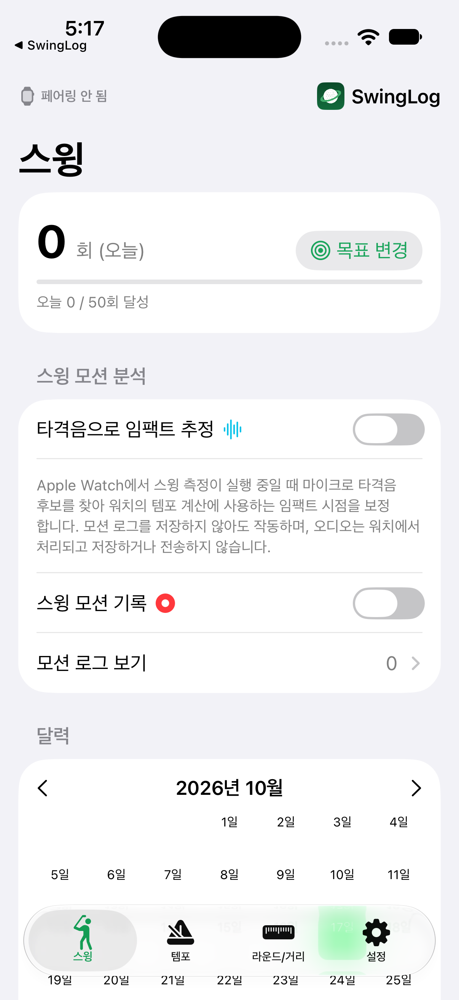

SwingLog 상세 사용 설명서
아이폰과 Apple Watch로 연습을 기록하고, 라운드 중 거리와 스코어를 관리하는 방법입니다. 버전 1.0 · 빌드 23 기준, 2026년 10월 25일의 최신 개발 구현을 확인했습니다. TestFlight·App Store 배포본과 일부 기능이 다를 수 있습니다. 화면의 숫자는 사용 예시이며, 기기·언어·권한에 따라 화면이 달라질 수 있습니다. 코스 생성·전송 안내는 2026년 10월 28일 기준으로 개정했습니다.
검색 결과가 없습니다.
시작하기
- 페어링된 아이폰과 Apple Watch에 SwingLog를 설치하고 양쪽 앱을 한 번씩 엽니다. 아이폰은 iOS 17 이상, 워치는 watchOS 10 이상이 필요합니다.
- 아이폰의 첫 안내를 읽습니다. 마지막 화면의 드라이버·7번 아이언 비거리는 선택 입력입니다. 나중에 설정 → 클럽 관리에서 입력하거나 수정할 수 있습니다.
- 설정에서 언어, 거리 단위(m/yd), 오른손잡이·왼손잡이를 확인합니다. 워치 착용 손목과 크라운 방향은 워치의 시스템 설정을 기본으로 사용합니다. 실제 착용과 다르면 먼저 확인하고 필요할 때만 앱의 재정의를 사용합니다.
- 워치에서 연습 모드를 열고 처음 안내에 따라 3회 스윙하여 보정합니다. 라운드 전에는 아래의 코스 준비도 완료합니다.
인터넷과 연결: 보정이 완료되고 필요한 설정·코스가 전달된 워치는 아이폰을 계속 조작하지 않아도 활동할 수 있습니다. 기록 전송은 연결 상태에 따라 지연됩니다. 웹 설명서, 구매 확인, iCloud 동기화에는 네트워크가 필요할 수 있습니다.
라운드 모드를 사용할 예정이라면 코스 맵 준비와 워치 전송이 필수입니다. 맵 준비 안내에 따라 아이폰에서 맵을 만들고, 라운드 전에 워치에 표시된 코스 이름을 확인하세요.
권한과 준비
| 권한 | 사용하는 곳과 목적 | 허용하지 않았을 때 |
|---|---|---|
| 동작 | 워치의 스윙 감지와 모션·템포 분석 | 자동 감지를 사용할 수 없습니다. |
| 위치 | 워치의 그린·해저드 거리와 거리 측정, 아이폰 거리 측정·코스 지도 | 해당 GPS 기능을 사용할 수 없습니다. |
| 마이크 | 워치에서 순간적인 타격음 후보를 찾아 임팩트 시점 보강 | 소리 근거를 얻지 못하며 모션 기반 템포로 처리할 수 있습니다. 자동 거리 저장에는 모션·GPS 근거가 사용되며 거리 통계에서 우선 제외됩니다. |
| 건강 | 워치 골프 활동 유지·복구, 활동이 있는 경우 골프 운동 기록 저장 | 운동 세션 시작·복구에 제약이 생길 수 있습니다. |
허용을 거절했다면 기기의 설정에서 SwingLog 권한을 확인합니다. 시스템 권한 화면은 앱에서 선택한 언어와 다를 수 있습니다. 마이크 음성 파일은 저장하거나 전송하지 않으며, 감지 결과의 시간·강도 등 분석용 정보만 모션 기록에 포함될 수 있습니다.
연습: 보정과 스윙 카운터
- 워치에서 연습 모드를 시작합니다.
- 보정 안내가 있으면 보정을 시작하고 평소 연습할 크기의 스윙을 3회 합니다. 보정 도중 취소할 수 있습니다.
- 스윙 화면의 클럽을 눌러 사용할 클럽을 선택하고 시작을 누릅니다. 감지된 스윙은 활동 카운터와 오늘 횟수에 반영됩니다.
- 카운터 옆의 오늘 횟수/목표와 아래 진행 막대로 진행 상황을 확인합니다. 아이폰 스윙 → 목표 변경에서 목표를 바꾸면 워치에 전달됩니다.
- 중지는 감지를 멈춥니다. 다시 시작할 수 있습니다. 재보정은 감지를 멈춘 상태에서 실행합니다.
- 활동을 마칠 때는 활동 종료 페이지에서 종료하고 요약을 확인합니다. 템포 연습을 끝내는 것과 전체 활동 종료는 다릅니다.
감지는 손목 움직임을 기반으로 하므로 퍼팅이나 매우 작은 어프로치를 모두 세는 용도가 아닙니다. 카운터는 공을 친 횟수나 스코어와 같지 않습니다. 감지가 잘 안 되면 착용 방향과 보정을 먼저 확인한 뒤 설정 → 감지 기준를 조절합니다. 현재 범위는 70–130%이며, 낮을수록 더 민감하고 높을수록 보수적입니다.
Pro의 설정 → 스윙 강도 알림음을 켜면 보정 때의 움직임과 비교한 강도에 따라 소리로 피드백합니다. 클럽헤드 스피드나 실제 비거리를 측정하는 소리는 아닙니다.
아이폰 스윙 화면의 달력에서 날짜를 선택하면 그날 기록을 확인할 수 있고, 추이에서는 기간별 횟수와 목표를 비교합니다. 거리 단위와 언어는 설정에서 바꿀 수 있으며, 단위를 바꿔도 저장된 실제 거리를 바꾸지는 않습니다.
아이폰 실시간 연습 리포트
Pro가 없거나 모션 로그 저장이 꺼져 있어도 사용할 수 있습니다. 아이폰 앱을 화면에 열고 페어링된 워치에서 연습 모드를 시작하세요. 양쪽 기기가 즉시 통신할 수 있으면 리포트가 자동으로 열리고 감지된 스윙마다 갱신됩니다. 측정 템포·백스윙·다운스윙 시간, 가속도·회전 속도·손목 회전각을 합친 그래프와 중력 그래프를 보여줍니다.
리포트를 닫으면 같은 연습 실행 중에는 자동으로 다시 열리지 않습니다. 스윙 → 연습 분석 보기에서 다시 열거나 워치의 스윙 감지를 중지했다가 시작하면 새 실행으로 처리합니다. 태양 아이콘은 아이폰 화면 켜짐 유지 기능이며 끄면 일반 화면 잠금을 사용합니다.
모션 저장이 꺼져 있으면 리포트는 임시 데이터입니다. 원본 샘플은 메모리에서 처리하고, 다음 스윙이 이전 표시를 대체하며, 닫거나 앱을 백그라운드로 보내면 폐기합니다. 연습 종료나 연결 끊김 후에는 마지막 완료 화면이 남을 수 있습니다. 재연결 후에는 새 스윙을 기다립니다. 모션 로그·iCloud·백업 기록은 만들지 않습니다. Pro의 기록 저장과 직접 별표한 스윙 보관은 별도로 동작합니다. 워치의 측정 템포·별표와 라운드 모드는 계속 Pro 기능입니다.
연습: 템포와 진동
아이폰 템포에서 클럽 종류별 백스윙·다운스윙 시간, 반복 간격, 진동 테마를 설정합니다. 워치 템포 화면에서 종류를 선택하고 시작하면 설정한 리듬이 반복됩니다. 실행 중에는 종류 변경이 잠기므로 먼저 중지합니다. 아이폰의 소리 연습은 워치 없이도 사용할 수 있는 Pro 기능이며, 워치 진동 미리보기와는 다릅니다.
기본 사용자는 아이언 템포를 사용할 수 있습니다. Pro는 드라이버·웨지·퍼터 종류와 수준별 프리셋 등을 추가로 사용할 수 있습니다. 퍼터의 리듬 안내가 있다는 뜻이지 퍼팅이 자동 감지·기록된다는 뜻은 아닙니다. 직접 시간을 수정하면 프리셋과 값이 달라져 프리셋 선택 표시가 사라질 수 있습니다.
측정된 스윙 템포는 연습용으로 설정한 목표 시간과 별개입니다. 측정 템포는 백스윙 시간 ÷ 다운스윙 시간입니다. 예를 들어 0.90초와 0.30초이면 3.0:1입니다. 풀 스윙에서 흔히 사용하는 약 3:1은 참고값이며, 비율만으로 스윙의 좋고 나쁨을 판단하지 않습니다.
모션 기록과 타격음
아이폰 스윙 → 스윙 모션 분석에서 다음 Pro 옵션을 관리합니다.
- 타격음으로 임팩트 추정: 모션 로그 기록과 독립적으로 켤 수 있습니다. 워치 템포의 임팩트 시점에 소리 근거를 사용할 수 있지만, 모든 공의 타격을 확정하는 센서는 아닙니다.
- 스윙 모션 기록: 연습의 상세 센서 데이터를 보관합니다. 꺼도 기존 모션 로그 보기는 계속 열 수 있습니다.
- 고속 샘플링: 모션 기록을 켰을 때 고급 설정에서 선택합니다. 지원되는 워치에서 상세 데이터를 보강합니다. 기기 지원과 실제 수집률에 따라 달라지며 기본 감지는 50Hz입니다. 용량과 전송 시간이 늘어날 수 있습니다.
기록을 껐다 켜도 하위 고속 샘플링 선호 값과 독립적인 타격음 설정은 보존됩니다. 워치 제목 옆의 기록·속도계·파형 아이콘은 설정 상태를 표시합니다. 템포 옆의 소리 보강 / 모션 기반 아이콘은 해당 스윙의 실제 계산 근거를 나타내므로, 파형 설정 아이콘이 켜졌다고 모든 스윙에 타격음이 쓰인 것은 아닙니다.
라운드에서는 연습 모션 기록 설정과 별도로 자동 기록을 사용하며, 고속 옵션과 무관하게 50Hz로 동작합니다. 타격음 기능은 라운드에서 자동 활성화됩니다. 배터리 절약 모드에서는 마이크를 필요한 구간에만 사용하므로 소리 근거가 없는 스윙도 생길 수 있습니다.


이전 연구 기록
퍼팅·어프로치 실험 수집과 라운드 중 작은 스윙 관찰 기능은 종료되었습니다. 워치의 수집 진입점과 어프로치 관찰 설정은 제공하지 않습니다. 기존 스윙 감지·템포·타격음 기반 임팩트 추정·거리 측정은 유지됩니다. 작은 어프로치와 퍼팅이 모두 자동 감지되는 것은 아닙니다.
기존 연구 자료는 모션 로그 목록에서 인식 결과를 전체로 두면 확인할 수 있습니다. 연구 기록 전용 필터는 제공하지 않습니다. 그래프 조회, 원시 데이터 개별·다중 내보내기, 삭제가 가능합니다. 스윙 횟수·기준 스윙 코칭·스코어에는 포함하지 않습니다. 과거 라벨과 저장된 분석 결과는 원시 내보내기에 호환용으로 보존되며, 상세를 열거나 내보낼 때 실험 판정기를 다시 실행하지 않습니다. 백업이나 지연 전송으로 과거 연구 기록이 들어올 수 있습니다.
수동 퍼팅 수 기록, 퍼터 템포 안내, 그린 접근 시 거리 저장 안내는 별개 기능으로 유지됩니다.
별표와 나만의 비교 기준
Pro 사용자는 워치에서 최근 스윙의 별표를 눌러 좋았던 스윙으로 표시할 수 있습니다. 빈 별은 미선택, 채운 별은 선택 상태입니다. 연습 모션 기록이 꺼져 있어도 별표로 선택한 스윙은 모션 로그로 보관하여 아이폰에 전달합니다. 다음 스윙으로 대상이 바뀌기 전에 표시하는 것이 편리합니다.
아이폰 모션 로그 목록에도 별이 보이며, 상세의 요약에서 별표와 클럽을 바꿀 수 있습니다. 별 표시된 스윙들과의 비교는 같은 클럽의 인식된 별표 스윙을 사용하고, 현재 보고 있는 스윙 자체는 비교 기준에서 제외합니다. 항목별 유효 자료가 최소 5개 있어야 비교가 표시됩니다. 10–20개 정도의 만족스러운 스윙을 모으면 기준의 변동을 살펴보기 좋습니다.
백스윙·다운스윙·템포는 중앙값과 편차를, 하완 방향은 기록 시작 자세에 대한 상대 회전의 차이를 비교합니다. 방향 비교는 손잡이·착용 손목·크라운 방향 정보가 같은 자료를 사용합니다. 자료가 적거나 기준의 편차가 크면 비교 불가 또는 불안정으로 표시됩니다. 개인의 반복성 지표이며 이상적인 자세, 클럽페이스 각도, 커핑·스쿠핑을 판정하는 기능은 아닙니다.
라운드 전 코스 맵 준비
라운드 모드를 사용하려면 아이폰에서 코스 맵을 만들고, 라운드 전에 Apple Watch로 전송해야 합니다. 연습 모드에는 맵이 필요하지 않습니다. 라운드 모드는 Pro 기능입니다.
준비 순서: 아이폰에서 맵 만들기 → 저장 → 사용할 코스 선택 → Apple Watch로 전송 → 워치의 코스 이름 확인. 워치에 코스가 없으면 새 라운드를 시작할 수 없습니다. 코스 이름만으로는 그린 거리를 계산할 수 없으므로 플레이할 모든 홀의 기준점을 지정하세요. 기준점은 그린 중앙 부근의 위치이며, 당일 핀 위치와 같을 필요는 없습니다.
클럽도 준비합니다. 설정 → 클럽 관리에서 사용 클럽과 기준 거리를 확인합니다. 드라이버·7번 아이언 거리로 다른 클럽의 추정치를 만들 수 있지만 시작점일 뿐이므로 직접 조정하세요. 두 입력값은 양수이고 드라이버가 최소 10m 더 길어야 합니다. 직접 수정한 거리는 재추정해도 유지하고 퍼터·Other는 추정하지 않습니다. 클럽 목록은 변경을 모아 전체 목록으로 자동 전송하며, 코스 맵 전송은 별도로 실행합니다.
아이폰에서 코스 맵 만들기
- 아이폰에서 설정 → 라운드 모드 → 코스 관리를 열고 우측 상단 +를 누릅니다.
- 코스 이름을 입력합니다. 국가·주·도시 정보는 필요할 때 입력합니다.
- 플레이할 홀의 좌표 입력란 오른쪽 지도 아이콘을 누릅니다. 지도에서 코스 위치를 찾아 이동하고 확대합니다.
- 지도를 움직여 화면 중앙의 십자 표시를 해당 홀의 그린 중앙 부근에 맞춘 뒤 이 지점 사용을 누릅니다. 지도 위를 한 번 탭해 핀을 떨어뜨리는 방식이 아니라, 중앙 십자 아래 지점을 선택하는 방식입니다. 알고 있는 위도·경도를 직접 입력할 수도 있습니다.
- 해당 홀의 Par 3~7을 선택합니다. 모르면 —로 두세요. 사용할 모든 홀에 반복합니다. 홀 번호는 실제 코스 번호를 사용합니다. 예를 들어 10번 홀에서 시작하더라도 10번 홀 좌표는 10번에 입력합니다. 연습용 기준점 입력은 선택 사항입니다.
- 저장한 뒤 코스 목록에서 사용할 코스를 선택합니다. 이어서 워치 전송을 완료합니다.
각 홀의 Par에서 3~7을 눌러 선택하세요. 아직 모르면 —로 두고 나중에 수정할 수 있습니다. 기존 코스를 편집하면 저장된 Par가 표시됩니다. 연습 타깃에는 Par 선택이 없습니다. 그린·벙커·해저드·티박스 경계를 작성하는 도구는 없습니다. 새로 만든 맵에서는 기준점까지의 거리를 확인하며, 워치의 왼쪽 페이지에는 해저드 섹션 없이 자유 거리 측정이 표시됩니다. 기존 맵의 기준 좌표를 수정해도 이전에 저장된 경계와 선택 정보는 유지됩니다.
워치로 전송하고 확인하기
- 맵을 저장한 뒤 설정 → 라운드 모드 → 코스 관리에서 체크 표시로 사용할 코스를 선택합니다.
- 라운드 모드 설정으로 돌아가 Apple Watch로 전송을 누릅니다. 워치가 연결되어 있지 않으면 다시 연결된 후 전송됩니다.
- 워치에서 라운드 모드를 열어 시작 전에 코스 이름을 확인합니다. 선택한 코스 하나만 전송하며, 전체 목록을 자동 전송하지는 않습니다.
- 코스에서 GPS가 준비되면 거리를 확인합니다. 값이 비어 있으면 홀 번호·해당 홀의 기준점·GPS 상태를 확인하세요.
맵을 수정했다면 새 라운드 전에 선택 → 전송 → 워치 이름 확인을 다시 실행하세요. 워치에는 자동 코스 다운로드나 코스 검색 기능이 없습니다.
코스 내보내기·가져오기는 코스 파일의 백업·복원용으로 계속 사용할 수 있습니다. 앱 전체 백업에도 코스가 포함됩니다. 아이폰에서 복원한 뒤 사용할 코스를 선택하고 워치로 다시 전송하세요.
라운드 시작과 기본 화면
먼저 맵 준비와 워치 전송을 완료하세요.
라운드 모드는 Pro입니다. 워치 첫 화면에서 라운드 모드를 선택하고 코스 이름을 확인한 뒤 시작 홀 선택에서 1–18번 중 고릅니다. 샷건 출발도 가능합니다. 라운드 시작을 누릅니다. 미완료 라운드가 있으면 재개할 수 있습니다.
메인 화면에는 현재 홀·선택적 Par, 큰 그린 기준 거리, 추천 또는 직접 선택한 클럽이 나옵니다. 앞/뒤 거리는 기존 맵에 그린 경계가 있을 때만 표시됩니다. 아이폰에서 새로 만드는 맵에는 기준점과 선택한 Par가 포함됩니다. 홀 번호를 누르면 직접 홀을 변경할 수 있습니다. 클럽 추천은 남은 거리와 등록한 클럽 기준 거리를 사용하며 바람·경사·라이·장애물을 모두 판단하는 기능은 아닙니다.
샷 거리 측정을 시작하면 다음 샷의 추천을 다시 계산합니다. 해당 홀에서 측정 중이거나 저장된 내 샷이 있으면 자동 추천에서 드라이버를 제외합니다. 필요한 경우 드라이버를 직접 선택할 수 있습니다. 다음 클럽을 직접 골랐다면 그 선택이 우선합니다. 측정 중인 샷의 클럽과 다음 샷에 선택된 클럽은 서로 다른 값일 수 있습니다.
주요 화면은 화면 높이에 맞춰 배치합니다. 작은 화면에서는 클럽·별표·템포를 한 줄에 묶고, 템포를 누르면 샷 상세에서 백스윙·다운스윙 시간을 확인할 수 있습니다. 상태 표시를 누르면 측정 대상 변경, 자동 저장 되돌리기와 관련 안내를 확인할 수 있습니다. 큰 글자 등으로 내용이 화면에 들어가지 않으면 스크롤을 허용합니다.
방전·재시작 후 라운드 복구
워치는 샷·스코어·홀 변경 때 라운드를 로컬에 저장하고, 실행 중에는 기존 60초 전송 주기로 미완료 백업을 아이폰에 전달합니다. 라운드 시작·홀 이동·일시정지·재개 시에는 우선 전송을 시도합니다. 연결 상태와 watchOS 전송 일정에 따라 도착이 늦을 수 있습니다. 워치 스코어 화면의 설정에서 폰 저장 확인 시각을 볼 수 있으며, 이 시각은 아이폰이 실제로 저장한 뒤 응답했을 때만 갱신됩니다. iCloud 공간 부족과 별개로 아이폰 로컬 백업은 가능하지만, 연결되지 않았다면 최신 내용은 워치에만 남을 수 있습니다.
운동 세션을 복구할 수 없는 재시작에서는 라운드 복구 화면에서 라운드 이어하기 / 여기까지 저장 / 라운드 저장 안 함을 선택합니다. 워치에서 이어가기 전에도 기존 샷 원본을 유지합니다. 여기까지 저장은 GPS·마이크를 다시 시작하지 않고 저장하며, 마지막 활동 시각을 기준으로 제안된 종료 시각을 실제 플레이 종료 시각으로 확인·수정합니다. 충전한 다음 날의 시각을 자동으로 종료 시각으로 쓰지 않습니다.
아이폰 라운드/거리 → 라운드 기록 → 미완료 라운드에서도 마지막으로 받은 백업과 입력된 스코어를 확인하고 종료 시각을 정해 저장할 수 있습니다. 미완료 백업은 완료 라운드 건수·연도별 목록과 구분합니다. 폰에서 확정하면 워치에 종료를 전달하고, 폐기하면 양쪽의 라운드·스코어만 정리합니다. 폐기는 추가 확인을 거치며 스윙·거리 기록은 유지합니다. 이후 도착한 오래된 백업이 완료·폐기 상태를 되돌리지 않도록 처리합니다.
이 1차 복구 기능은 진행 중 거리 측정의 출발점이나 자유 거리 측정을 복원하지 않습니다. 방전 중 발생한 샷도 측정할 수 없습니다. 앱 충돌 때의 HealthKit 운동 세션 복구와 완전 방전 후 라운드 복구는 구분됩니다. 양쪽 기기에 이 기능을 지원하는 버전이 설치되어 있어야 미완료 백업이 작동합니다.
GPS와 거리 읽기
메인 화면 왼쪽 위 GPS 아이콘을 누르면 자세한 상태를 볼 수 있습니다. 초록은 준비됨, 주황 계열은 수신·정확도 개선·최근 위치 확인이 필요한 상태, 빨강은 권한 또는 위치 사용 불가 상태를 나타냅니다. 아이콘은 시스템 시간 근처의 고정된 도구 모음이므로 본문을 스크롤해도 유지됩니다.
그린 거리 표시와 정확한 샷 거리 측정의 준비 기준은 다릅니다. 거리 숫자가 보이더라도 측정 시작·저장 버튼이 잠시 비활성화될 수 있습니다. 샷 측정에는 기본적으로 5초 이내의 위치와 10m 이내의 수평 정확도가 필요합니다. 수신이 잠시 불안정하면 마지막 유효 그린 거리를 유지할 수 있으므로 숫자가 보인다고 최신 위치라는 뜻은 아닙니다.
탁 트인 곳에서 잠시 기다립니다. 오래된 스윙의 출발 위치가 기록되지 않았다면 나중에 걸어간 위치를 대신 출발점으로 쓰지 않습니다. 앱 강제 종료·재실행으로 진행 중 거리 측정의 GPS 출발점은 복원되지 않습니다.
내 샷 거리 측정
- 샷 전에 클럽을 확인하고 스윙합니다. 워치가 스윙과 그 시각의 GPS 위치를 확보해야 합니다.
- 샷 거리 측정을 누릅니다. 이동한 뒤 눌러도 출발점은 버튼을 누른 위치가 아니라 스윙 당시 위치입니다. 현재 홀의 최근 유효 스윙이고 아직 거리 저장 전이면 별도의 경과 시간 제한은 없습니다.
- 공에 도착하면 거리 저장을 누릅니다. 기록되는 것은 두 위치 사이의 수평 거리로, 캐리만이 아니라 공이 굴러간 거리도 포함될 수 있습니다. 실제 비행 궤적이나 걸어간 경로 길이를 재는 것은 아닙니다.
- 잘못 시작했으면 취소합니다. 이미 저장한 샷에는 중복 시작 안내가 표시됩니다.
측정 중에는 해당 샷의 클럽 · 거리가 표시됩니다. 위쪽 추천 클럽은 다음 샷용이므로 바뀌어도 현재 측정의 출발점과 클럽은 바뀌지 않습니다. 별표는 좋았던 스윙의 표시이며 거리 저장 버튼을 대신하지 않습니다.
내 샷 측정이 진행 중인 채 그린에 접근하면 시스템 알림음·진동과 저장 안내를 제공합니다. 그린 경계가 있으면 경계 5m 이내, 없으면 기준 좌표 20m 이내에서 정확한 GPS 위치가 3초 이상 이어질 때 안내합니다. 샷 직후 15초와 스윙 중에는 알리지 않으며 측정당 한 번만 알립니다. 알림음·진동은 워치 설정을 따릅니다. 거리 저장 버튼이 강조되면 공 위치에서 직접 저장하세요. 접근만으로 자동 저장하지 않으며 자유 측정에는 적용되지 않습니다.
직전 샷의 클럽 수정
예를 들어 7번 아이언으로 쳤는데 화면에는 3W가 선택되어 있었다면, 메인의 클럽 버튼을 누르고 직전 샷 클럽 수정을 선택합니다. 대상 시각과 클럽을 확인한 뒤 7I로 바꿉니다. 다음 샷 클럽 선택은 앞으로 칠 클럽만 바꾸는 별도 동작입니다.
워치에서 직전 샷을 수정하면 같은 스윙의 라운드 연결 정보, 모션 로그, 진행 중 또는 저장된 거리의 클럽이 함께 바뀝니다. GPS 출발점·기록 시각·측정 거리·센서 원본은 보존됩니다. 수정 화면을 여는 동안 새 스윙이 감지되면 잘못된 샷을 바꾸지 않도록 대상이 무효화될 수 있으므로 다시 엽니다. 아이폰의 모션 로그 상세나 거리 상세에서 개별 클럽을 편집하는 것은 이 워치의 통합 수정 흐름과 구분해 사용합니다.
자동 측정과 다음 샷
아이폰 설정 → 라운드 모드 → 샷 거리 자동 측정, 또는 워치 스코어 설정의 같은 토글을 켭니다. 기본은 꺼짐이며 양쪽 설정은 동기화됩니다. 켜면 이후 스윙에 정확한 GPS가 있을 때 임시 거리 측정을 시작합니다. 끄면 진행 중인 측정은 유지하고 새로운 자동 측정은 시작하지 않습니다.
수동으로 시작한 측정에도 다음 스윙을 이용한 자동 종료가 적용됩니다. 같은 홀에서 최소 30초 경과, 이동 거리가 25m 및 양쪽 GPS 오차 합의 두 배보다 큼, 양쪽 오차 10m 이내, 거리 500m 이하 조건이 필요합니다.
| 상황 | 처리 |
|---|---|
| 시간·이동·GPS 충족, 강하고 시점이 맞는 타격음 있음 | 이전 거리를 저장합니다. 자동 측정이 켜져 있으면 그 위치에서 새 샷 측정을 시작합니다. |
| 시간·이동·GPS 충족, 타격음이 약하거나 없음 | 확인 화면 없이 동일하게 저장·연결합니다. 이 거리는 아이폰에서 확인하기 전까지 클럽 거리 통계에서 제외합니다. |
| 시간·이동·GPS 부족 | 측정을 유지합니다. 공 위치에서 직접 저장하거나 취소하세요. 짧은 어프로치는 수동 저장이 필요할 수 있습니다. |
메인 화면은 현재 측정하는 샷의 클럽과 실시간 거리를 보여줍니다. 자동 저장의 되돌리기는 20초 동안 선택적으로 사용할 수 있으며 다음 샷 처리를 막지 않습니다. 스윙 위치를 나중에 걸어간 위치로 대체하지 않습니다. 입력한 스코어는 바뀌지 않습니다.
샷 지도와 기록 수정
워치에서 처음 새 라운드를 시작할 때 샷 위치 저장 여부를 선택합니다. 워치 라운드 설정에서 이후 저장을 변경할 수 있습니다. 연속 이동 동선은 기록하지 않습니다. 라운드 위치는 개인 iCloud와 라운드 백업에 포함됩니다.
아이폰 라운드 기록 → 스코어카드 → 샷 지도 및 수정을 엽니다. 같은 홀의 연속된 거리 기록을 선택해 첫 시작점부터 마지막 종료점까지 합칩니다. 첫 클럽과 모션 로그를 사용하며 종료 위치가 없으면 합칠 수 없습니다. 좌측 스와이프로 라운드와 거리 통계에서 제외합니다. 마지막 수정 되돌리기로 통계 상태까지 복구할 수 있으며 스코어와 원본 모션 로그는 유지합니다.
모션·GPS로만 자동 저장한 거리는 통계 제외 표시가 나옵니다. 필요하면 거리 확인 후 통계에 포함을 선택하세요. GPS 등 시스템 조건에 맞지 않는 거리는 강제로 포함할 수 없습니다. 저장된 위치 삭제는 수정 이력의 위치도 제거하고 거리·모션 로그·스코어는 유지합니다. 삭제는 이후 iCloud와 워치에 반영되며 내보낸 파일은 별도로 관리해야 합니다.
인식되지 않은 샷 추가: 종료된 라운드의 해당 홀에서 샷 추가를 누르고 클럽만 선택해 저장합니다. 마지막 샷으로 추가되며, 순서 편집에서 핸들을 드래그해 같은 홀 안에서 이동할 수 있습니다. 입력 시각을 스윙 시각으로 만들지 않으므로 수동 입력 · 시각 미상으로 표시하고 모션 로그나 템포를 생성하지 않습니다. 홀 타수·퍼팅 수는 변경하지 않습니다.
지도 위치와 빈 거리 보완: 샷의 클럽·위치 수정에서 공을 친 위치와 공이 멈춘 위치를 선택합니다. 위성 지도를 움직여 중앙 조준점으로 지정하고 저장합니다. GPS 위치가 없어도 사용할 수 있으며 지도 입력만으로 위치 권한을 요청하지 않습니다. 위치는 라운드·개인 iCloud·워치 전송·백업에 포함됩니다. 빈 거리만 같은 홀의 바로 앞·뒤 샷에 있는 실제 위치로 보완합니다. 임의 중간점이나 그린 중앙으로 거리를 추측하지 않습니다. 이미 저장한 거리와 원래 시각은 유지합니다. 드롭 등으로 이 샷 뒤에 공을 옮겼다면 다음 샷과 연결을 끄세요.
위치로 계산한 거리는 먼저 라운드에만 표시하며, 거리 확인 후 통계에 포함을 누르면 별도 거리 기록을 생성해 통계에 추가합니다. 기존 20–500m 통계 기준은 유지하므로 작은 샷은 지도에 표시할 수 있어도 통계에 포함되지 않을 수 있습니다. 수동 샷의 거리 기록은 라운드 날짜로 분류하고 실제 시각은 미상으로 표시합니다. 순서·위치를 바꾸면 아직 확정하지 않은 계산값만 다시 계산합니다. 마지막 수정 되돌리기는 순서·위치·클럽과 생성한 거리 기록을 함께 복원합니다. 현재 백업 형식은 12이며, 이 기능을 사용하는 양쪽 앱을 업데이트해야 합니다.
연습 스윙 처리
라운드 중 짧은 간격의 연속 스윙은 바로 모두 확정 보관하지 않고 한 장소의 스윙 후보로 처리합니다. 20초 이내에 반복되고 실제 이동 근거가 없으면 이전의 보호되지 않은 후보를 다음 스윙으로 대체할 수 있습니다. 이후 GPS로 출발 장소를 떠난 것을 확인하면 마지막 후보를 남기는 방식입니다.
별표, 사용자가 확정한 측정, 클럽 수정 등으로 보호된 스윙은 보존합니다. 간격이 길거나 위치 근거가 불확실하면 기록을 남길 수 있습니다. 따라서 실제 타격과 연습 스윙을 완벽하게 분류하지는 않습니다. 모션 로그를 줄이는 처리와 독립적인 감지 카운터는 다를 수 있으며, 스코어는 반드시 직접 확인합니다.
샷 정보와 자유 거리 측정
메인에서 오른쪽으로 스와이프하여 왼쪽 샷 정보 페이지를 엽니다. 해저드 경계가 있는 외부 맵은 해저드 정보를 맨 위에 표시하고, 이어서 현재 홀의 샷 목록, 자유 거리 측정을 표시합니다. 아이폰에서 새로 만든 맵은 해저드 섹션 없이 샷 정보부터 표시합니다. 긴 내용은 Digital Crown으로 스크롤하며, 위·아래 화살표로 더 볼 내용이 있는지 확인할 수 있습니다.
현재 홀의 샷은 친 순서대로 클럽 이름과 템포 · 거리를 보여줍니다. 예를 들어 3.0:1 · 200 m처럼 표시하며, 측정 중에는 변화하는 실시간 거리를 파란색으로, 저장된 거리가 없으면 빨간색 —로 표시합니다. 템포를 계산하지 못한 경우에는 해당 값이 —입니다. 클럽 이름과 화살표가 있는 샷 카드를 눌러 이전 샷의 클럽도 변경할 수 있습니다. 변경은 연결된 모션 로그·거리 기록에도 반영되고, GPS 위치·거리·스코어와 다음 샷용 클럽은 유지됩니다. 이전 버전에서 이미 워치의 원본을 전송 후 정리한 샷은 클럽 변경이 표시되지 않을 수 있습니다.
자유 거리 측정 → 거리 측정 시작은 동반자의 샷이나 임의의 두 지점 사이를 재는 기능입니다. 출발점에서 시작하고 도착점에서 측정 종료를 누릅니다. 결과는 닫거나 다시 측정할 때까지 유지됩니다. 취소는 진행 중 측정을 없앱니다.
자유 측정은 클럽·모션 로그·라운드 샷 기록을 만들지 않습니다. 내 샷 측정과 동시에 실행할 수 있으며 한쪽을 종료해도 다른 쪽은 계속됩니다. 두 측정 모두 워치를 착용한 사람의 현재 위치를 도착점으로 사용하므로 각각 원하는 지점에서 종료해야 합니다.
스코어·홀 이동·휴식·종료
메인에서 왼쪽으로 스와이프하여 오른쪽 스코어 페이지를 엽니다. 타수는 그 홀의 퍼팅을 포함한 총 타수입니다. 퍼팅 수는 선택적으로 따로 입력하며 타수를 넘길 수 없습니다. 벌타 전용 입력칸은 없으므로 최종 타수에 반영합니다. 동반자의 별도 스코어카드는 지원하지 않습니다.
값을 바꾸면 저장됩니다. 처음 보이는 값은 해당 홀 Par(없으면 4), 퍼팅은 최대 2의 초기값이며 자동 감지된 타수에 2를 더한 결과가 아닙니다. 단순히 화면을 열었다고 초기값이 확정되는 것은 아닙니다. 다음 홀: N번은 표시 중인 스코어를 확정하고 이동합니다. 18번 다음은 샷건 순서에 따라 1번으로 이어지며 출발 홀을 반복하기 전 종료합니다.
내 샷 측정 중 다음 홀을 누르면 거리 저장 후 다음 홀 / 측정 취소 후 다음 홀 / 돌아가기로 해결합니다. GPS가 부족하면 저장이 잠시 불가능할 수 있습니다. 다음 홀 티박스 데이터와 저장된 스코어가 있을 때 이동을 제안할 수 있지만, GPS만으로 홀을 강제 변경하지 않습니다.
휴식하려면 라운드 → 일시정지를 누릅니다. 센서와 위치·마이크 등 활동을 멈추고 재개할 때 다시 시작합니다. 내 샷 또는 자유 측정이 진행 중이면 먼저 끝내거나 취소해야 합니다. 휴식 시간도 시작부터 종료까지의 라운드 소요 시간에 포함됩니다.
종료를 누르면 저장하고 종료 / 저장하지 않고 종료 / 라운드 계속하기를 선택합니다. 저장은 종료 시각과 라운드·스코어를 아이폰으로 보냅니다. 저장하지 않음은 라운드·스코어만 폐기하며 이미 남은 스윙·거리 기록은 유지합니다. 계속은 라운드로 돌아갑니다. 종료를 확정하면 미완료 측정은 취소되므로 필요한 거리는 먼저 저장합니다.
배터리 절약
아이폰 라운드 설정과 워치 스코어 화면 상단 톱니바퀴의 배터리 절약 모드는 같은 설정입니다. 기본 라운드도 50Hz를 사용하고 기록 전송을 모아서 처리합니다. 절약 모드를 켜면 이동·정지·손목 움직임을 보고 타격음 입력을 필요한 시간대로 줄이고, 측정 중이 아닌 이동 구간에서는 GPS 요구 정확도를 낮춥니다. 내 샷 또는 자유 거리 측정 중에는 높은 GPS 정확도를 유지합니다.
감지 자체는 계속되지만 마이크가 쉬는 구간이나 다시 켜지는 시점에는 소리 근거를 얻지 못할 수 있습니다. 그 경우 모션 기반 템포와 수동 거리 저장을 사용할 수 있습니다. 휴식에는 일시 정지도 사용하세요. 배터리 지속 시간은 기종·배터리 건강·라운드 시간·위치 환경에 따라 달라지며 18홀 완료를 보장하지 않습니다.
모션 로그 목록과 상세
아이폰 스윙 → 모션 로그 보기로 들어갑니다. 날짜별 목록에 기록 시작 시각(초 포함), 클럽, 별표가 표시됩니다. 필터는 기간(전체·오늘·7일·30일), 클럽, 별표 여부, 인식 결과를 조합합니다. 편집 중에도 필터 결과만 유지하며 전체 선택 또는 날짜별 전체 선택으로 선택한 기록을 삭제할 수 있습니다. 개별 기록은 왼쪽으로 스와이프하여 삭제합니다.
상세에는 연결된 측정 거리, 기록 시각, 클럽·별표, 최대 가속도·회전 속도, 샘플 수, 템포와 개인 비교가 표시됩니다. 지속 시간은 기록 구간의 길이이며 백스윙+다운스윙 시간이나 “길수록 좋은 스윙”을 뜻하지 않습니다. 시작 전·후 동작이 포함될 수 있습니다.
상세 화면 하단의 플로팅 이전 / 다음 버튼으로 목록 순서대로 이동합니다. 가운데에는 현재 순번·전체 건수와 기록 시각이 표시됩니다. 필터 목록에서 열면 그 결과 안에서, 스코어카드에서 열면 해당 라운드의 표시된 기록 안에서 이동합니다. 상세를 연 시점의 탐색 범위를 유지하므로 별표·클럽을 수정해도 갑자기 다른 범위로 바뀌지 않습니다. 첫 기록과 마지막 기록에서는 해당 방향 버튼이 비활성화됩니다.
템포의 테이크어웨이·탑·임팩트는 센서 기반 추정입니다. 백스윙은 탑−테이크어웨이, 다운스윙은 임팩트−탑으로 계산합니다. 구간이 부족하면 값이 나오지 않을 수 있습니다. 다음 연습 안내는 기록 품질과 판정에 기반한 앱의 규칙형 안내이며 생성형 AI가 만든 답변이 아닙니다.
그래프와 원시 데이터
그래프 합쳐 보기를 켜면 가속도·회전 속도·손목 회전각을 각 신호의 최대값에 맞춘 0–100% 상대 크기로 겹쳐 봅니다. 곡선의 시점과 모양을 비교하는 화면이며 서로 다른 단위의 물리량이 같다는 의미는 아닙니다. 끄면 가속도 → 회전 속도 → 손목 회전각 순서로 각각 표시되고 중력은 별도로 이어집니다.
- 가속도(g): 워치가 측정한 손목 움직임의 가속도 크기입니다. 공의 가속도가 아닙니다.
- 회전 속도(rad/s): 워치의 각속도 크기입니다. 클럽헤드 스피드나 볼 스피드가 아닙니다.
- 손목 회전각(°): 워치 자세의 상대 회전 지표입니다. 손목 관절의 꺾임만 분리한 각도나 클럽페이스 각도가 아닙니다.
- 중력 X/Y/Z: 워치 좌표계에서의 중력 성분으로 자세 변화를 살펴봅니다.
시간축은 기록 내 경과 시간입니다. 결합 그래프는 주요 움직임 구간을 중심으로 보여주고 개별 그래프는 기록 구간에 맞춥니다. 추정 구간 선과 타격음 후보 표시가 있으면 함께 읽되, 소리 후보의 존재와 템포 계산에 실제 사용된 근거는 구분합니다.
원시 데이터 내보내기(JSON)는 보관된 전체 샘플과 메타데이터를 공유합니다. OS가 계산한 자세·중력·쿼터니언과 앱이 계산한 크기·시점 등 가공값도 포함되므로 센서의 가공 전 전기 신호를 뜻하지 않습니다. 음성 파일은 포함하지 않습니다. 고속 기록은 샘플 수·파일 크기·전송 지연을 늘릴 수 있습니다.
AI 분석 요청
앱은 AI 답변을 직접 생성하거나 자동 전송하지 않습니다. 분석용 텍스트를 기기에서 만든 뒤 시스템 공유·복사를 사용합니다. 공유 대상으로 고른 외부 AI의 데이터 정책이 적용됩니다.
- 한 스윙: 상세의 AI 분석 요청에서 요약 지표와 최대 150개로 줄인 시계열을 공유합니다. 주요 시점과 피크를 우선 보존하며 원시 JSON 전체와는 다릅니다.
- 패턴: 목록의 AI 분석 요청에서 인식된 스윙 3–10개를 선택합니다. 5개 이상을 권장하며 같은 클럽·유사한 조건이면 비교하기 좋습니다. 전체 요약과 대표·차이가 큰 일부 파형을 함께 사용합니다.
- 라운드: 라운드 기록의 스코어카드에서 AI 분석 문서를 미리 보고 공유합니다. 해당 라운드에 연결된 스윙·거리와 홀별 스코어·선택적 퍼팅을 사용합니다. 같은 날의 다른 연습 자료는 자동 포함하지 않습니다.
관찰 가능한 수치와 추정 근거를 함께 보고, 누락된 샷·불확실한 임팩트를 감안하세요. AI가 구질·페이스·신체 자세를 단정하면 워치 센서만으로 확인할 수 있는지 다시 확인합니다.
아이폰 라운드·거리 기록
라운드/거리 → 라운드 기록에서 총 건수와 월별 그룹을 봅니다. 상단의 전체/연도 필터는 앱 재실행 후에도 유지됩니다. 각 라운드에는 기록된 홀 수와 총타수가 표시되며, 타수가 없으면 스코어 미기록으로 표시합니다. 스코어카드에는 시작·종료 시각(분 단위), 휴식을 포함한 소요 시간, OUT/IN 표, 홀별 스윙·거리·별표와 모션 로그 링크가 있습니다. 미기록 홀을 임의의 0타로 해석하지 마세요.
스코어 표의 타수에는 Par 대비 기호를 표시합니다. 버디는 파란 동그라미, 이글 이상은 파란 이중 동그라미, 보기는 빨간 네모, 더블보기 이상은 빨간 이중 네모이며 파는 장식 없이 표시합니다. 실제 타수는 그대로 유지하고 Par 정보가 없는 홀은 숫자만 표시합니다. 스코어 기호 안내를 펼치면 범례를 볼 수 있습니다. 모든 앱 언어에서 같은 기호를 사용합니다.
라운드는 왼쪽 스와이프 또는 편집·전체 선택으로 삭제합니다. 라운드 삭제는 연결된 스윙·거리 기록까지 삭제하는 동작이 아닙니다. 스윙·거리는 각각의 목록에서 관리합니다.
거리 탭에는 최근 25개와 전체 기록 진입점이 표시됩니다. 통계 기간(30일·90일·전체)은 클럽별 요약에 적용되고 최근 목록은 별도로 최신 25개입니다. 전체 기록은 기간·사용자 지정 날짜·클럽·통계 포함 여부·정렬을 조합해 필터링하며 날짜별로 묶입니다. 더 보기로 추가 표시하고 편집 시 전체 선택은 화면에 로드된 행뿐 아니라 필터에 맞는 전체 결과를 선택합니다.
거리 통계는 포함된 기록의 평균·중앙값·최장 거리·건수를 사용합니다. 시작/끝 GPS 정확도가 10m를 초과하거나 거리가 20m 미만·500m 초과이면 자동 제외됩니다. 상세에서 정상 기록을 통계에서 제외하거나 다시 포함할 수 있지만 시스템 무효 기록을 강제로 포함할 수는 없습니다. 제외는 삭제와 다릅니다.
아이폰만으로 거리 측정
라운드/거리의 간편 거리 측정에서 사용 클럽을 고르고 시작합니다. GPS를 기다리는 동안 출발점에 머무릅니다. 도착점에서 측정을 종료한 뒤 결과를 확인하고 저장 또는 다시 측정을 선택합니다. 측정·결과 확인은 기본 기능, 기록 저장은 Pro입니다.
이 기능은 아이폰 GPS를 쓰며 워치의 샷이나 자유 측정과 독립적입니다. 탭을 잠시 옮겨도 진행 중 측정을 유지하지만 앱 강제 종료 후 복원되는 기능은 아닙니다. 기록 시각은 시작 버튼 시각이며 저장한 시각과 구분됩니다. 워치의 스윙 연결 거리 기록은 해당 스윙의 기록 시작 시각을 사용합니다.
동기화·백업·삭제
워치 기록은 로컬에 보관한 뒤 아이폰에 전달됩니다. 라운드 중 배터리 정책과 후보 처리 때문에 바로 목록에 나타나지 않을 수 있습니다. 라운드 기록·스코어카드는 종료 후 저장했을 때 아이폰에 나타납니다. 연결이 돌아오면 보류된 전송을 재시도합니다.
설정 → iCloud 백업에서 계정·동기화 상태와 최근 성공 시각을 확인합니다. 아이폰의 저장소는 개인 iCloud와 동기화하며 모션 로그 전체를 보관합니다. iCloud는 삭제도 반영되는 동기화이므로 과거 상태를 따로 보존하는 파일 백업과 다릅니다. 구매 권한은 iCloud 데이터가 아니라 App Store에서 확인합니다.
Pro의 데이터 내보내기 / 데이터 가져오기는 JSON 파일로 스윙·모션·거리·라운드·스코어·클럽·코스와 설정을 보관·복원합니다. 저장된 샷 GPS와 편집 이력도 포함합니다. 고속 샘플링·타격음 추정·배터리 절약·샷 거리 자동 측정·스윙 인식음, 그래프 합쳐 보기·연습 리포트 화면 유지·저장된 기록 필터 설정도 포함합니다. 가져오기는 기록의 ID와 변경 시각을 기준으로 병합하고, 라운드 옵션도 더 최근에 변경한 값을 유지합니다. 구형 백업에 없는 옵션은 현재 값을 유지합니다. 워치로 설정 재전송을 요청하지만 실제 반영은 연결 상태에 따라 달라집니다. 워치 보정값·구매 권한·시스템 권한과 폰에 아직 도착하지 않은 기록은 포함하지 않습니다. 코스만 내보내는 기능과 다르며, 별도로 내보낸 파일은 사용자가 관리합니다.
모든 데이터 삭제는 아이폰 데이터를 초기화하고 워치에도 삭제를 요청합니다. 연결·iCloud 반영이 끝났는지 확인하세요. 별도로 내보낸 파일 백업을 지우거나 구독을 해지하지는 않습니다. 사용자 추가 클럽을 삭제할 때에는 연결된 거리 기록도 삭제될 수 있으므로 확인창의 건수를 확인합니다.
Pro 구독
기본 기능은 오늘 스윙 횟수·목표, 아이폰 실시간 연습 리포트, 아이언 템포, 아이폰 거리 측정·결과 확인 등입니다. Pro는 라운드 모드, 모션 로그·워치 측정 템포·별표 비교, 캘린더·추이, 거리 기록·통계, 추가 템포 기능, 사용자 클럽 추가·정렬, 파일 백업 등을 제공합니다. 각 화면의 잠금 표시를 확인하세요.
설정 → Pro로 업그레이드에서 연간 가격과 조건을 확인합니다. 자격이 있는 계정에는 1개월 무료 체험이 표시됩니다. 체험 후에는 표시된 연간 가격으로 자동 갱신되며 가격·통화·체험 자격은 App Store 정보에 따릅니다. 설명서에 고정 가격을 약속하지 않습니다.
이미 구독했다면 같은 구매 계정으로 구매 내역 복원을 실행하고 양쪽 앱을 다시 엽니다. 구독 관리에서 Apple 구독 화면으로 이동합니다. 앱 삭제나 앱 데이터 삭제는 구독 해지가 아닙니다. 갱신을 원하지 않는 무료 체험은 만료 최소 24시간 전에 취소하도록 Apple 구독 안내를 확인하세요.
Xcode 개발용 잠금 해제는 공개 앱의 구독이 아닙니다. TestFlight의 구매 테스트와 실제 App Store 결제 환경도 구분됩니다. 오프라인·다른 기기의 권한 갱신이 지연되면 네트워크 연결 후 복원과 재실행을 확인합니다.
문제 해결
| 증상 | 확인할 순서 |
|---|---|
| 라운드 모드를 시작할 수 없음 | Pro 상태 → 선택 코스 전송 → 워치 코스 이름 → 보정·권한을 확인합니다. |
| 스윙이 누락되거나 너무 많이 잡힘 | 착용 방향 → 3회 재보정 → 감도를 확인합니다. 작은 스윙·퍼팅은 자동 기록을 기대하지 않습니다. |
| 그린 거리는 보이지만 샷 버튼이 비활성 | 현재 정확도와 스윙 당시 GPS는 별개입니다. GPS 아이콘을 누르고 출발 위치 확보 여부를 확인합니다. |
| 템포가 없거나 이상함 | 백스윙 시작이 기록됐는지, 추정 탑·임팩트 위치와 소리/모션 근거를 확인합니다. 타격음 설정만으로 소리 사용이 보장되지는 않습니다. |
| 다음 홀로 바로 이동하지 않음 | 내 샷 측정을 저장·취소하는 선택 화면 또는 일시 정지 상태를 확인합니다. |
| 아이폰에 기록이 늦게 보임 | 두 앱 실행 → 워치 연결 → 전송 대기를 확인합니다. 라운드 기록은 종료 후 저장해야 합니다. |
| 별표 비교가 안 나옴 | 동일 클럽, 현재 기록을 제외한 유효 자료 5개 이상, 착용 방향 정보와 자료 편차를 확인합니다. |
| 클럽 추천이 맞지 않음 | 단위·기준 거리·직접 선택 여부·첫 샷 이후 드라이버 제외를 확인하고 원하는 클럽을 직접 고릅니다. |
| 설명서를 열 수 없음 | 네트워크를 확인하거나 브라우저로 다시 엽니다. 오프라인에는 설정의 짧은 앱 사용법을 이용합니다. |
문제를 전달할 때는 설정 → 앱 버전, 워치 모델·OS, 발생 순서와 필요한 화면을 함께 남기면 원인 확인에 도움이 됩니다. 센서 분석이 필요한 경우 해당 기록의 JSON을 선택적으로 공유할 수 있습니다. 공유 전 내용과 수신 대상을 확인하세요.
개인정보와 설명서 정보
이 설명서는 검토일에 제공되는 기능을 기준으로 작성했습니다. 구독, 기기, 코스 데이터에 따라 화면에 차이가 있을 수 있으며 앱 업데이트에 맞춰 설명서도 변경됩니다.
앱 설정의 앱 사용법 보기는 짧은 안내이며 상세 사용 설명서 (온라인)는 이 문서입니다. 언어 메뉴에서 한국어·English·日本語를 전환할 수 있고, 검색과 목차로 항목을 찾거나 브라우저 인쇄로 보관할 수 있습니다. 웹 설명서는 앱의 스윙·GPS·건강 데이터를 전달받지 않습니다.